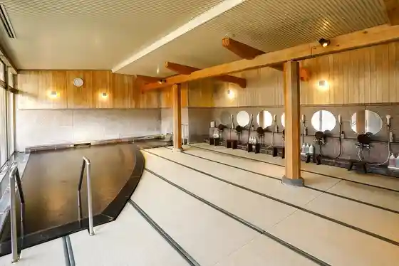
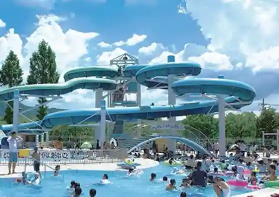
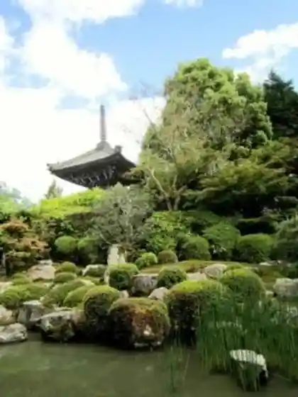

Kuwa Yama Shrine
Kameoka, Kyoto · 0771-22-1023 · Official / source link
Gareria Kameoka
Kameoka, Kyoto · 0771-29-2700 · Official / source link
Satoyama no Kyujitsu Kyoto Kemuri Kawa
Kameoka, Kyoto · 0771-26-2345 · Official / source link

Kameoka Sports Park Puru
Kameoka, Kyoto · 0771-22-8810 · Official / source link

Ano Tera
Kameoka, Kyoto · 0771-24-0809 · Official / source link

Izumo Dai Shrine no Manai no Mizu
Kameoka, Kyoto · 0771-24-7799 · Official / source link
Izumo Dai Shrine
Kameoka, Kyoto · 0771-24-7799 · Official / source link
Kameoka Sports Park
Kameoka, Kyoto · 0771-25-0372 · Official / source link
Sangasutajiamu by KYOCERA (Kyotofuritsu Kyoto Sutajiamu)
Kameoka, Kyoto · 0771-25-3331 · Official / source link
Ippan Shadanhojin Kameoka Tourism Association
Kameoka, Kyoto · 0771-29-5152 · Official / source link
Kawa no Eki Kameoka Suihen Park
Kameoka, Kyoto · 0771-55-9755 · Official / source link
Senjuji
Kameoka, Kyoto · 0771-23-1434 · Official / source link
Tan Yama Shuzo
Kameoka, Kyoto · 0771-22-0066 · Official / source link
Sumato ! Kamemaru Kanko Rentasaikuru
Kameoka, Kyoto · 0771-22-0691 · Official / source link
Hozugawa Suihen Park Babekyu Ba (Oto Campground)
Kameoka, Kyoto · 0771-56-9380 · Official / source link
Yu no Hana Onsen
Kameoka, Kyoto · 0771-22-5645 · Official / source link
Ganko Kameoka Rakuraku So
Kameoka, Kyoto · 0771-56-8880 · Official / source link
Kyo YUNOHANA RESORT Suisen
Kameoka, Kyoto · 0771-22-7575 · Official / source link
Hosen Tera Zen Center
Kameoka, Kyoto · 0771-24-0378 · Official / source link
Tamba Kameyama Castle Ruins
Kameoka, Kyoto · 0771-22-5561 · Official / source link
Oishi Shuzo
Kameoka, Kyoto · 0771-22-0632 · Official / source link
Bikkusumairu Hozugawa Rafuteingu
Kameoka, Kyoto · 0771-29-5370 · Official / source link
Tamba Shichifukujin Meguri (Yawara Gi no Michi)
Kameoka, Kyoto · 0771-22-0691 · Official / source link
Shoen So Hozugawa Tei
Kameoka, Kyoto · 0771-22-0903 · Official / source link
Sumiya Kiho Iori
Kameoka, Kyoto · 0771-22-7722 · Official / source link
Kyo Gohanto Rotemburo no Yado Yu no Hana Gatsu Ya
Kameoka, Kyoto · 0771-22-2400 · Official / source link
Tani Sei Tera (Mitsuhide Tera)
Kameoka, Kyoto · 0771-26-2054 · Official / source link
Kameoka Shichi Tanigawa Yagaikatsudo Center
Kameoka, Kyoto · 0771-24-6411 · Official / source link
Bussan City Ba Atorio
Kameoka, Kyoto · 0771-24-8888 · Official / source link
Nagomi Village Asahi
Kameoka, Kyoto · 0771-25-7537 · Official / source link
Taira no Sawa Park (Mizutori no Michi)
Kameoka, Kyoto · 0771-22-0691 · Official / source link
Para Park Kyoto
Kameoka, Kyoto · 090-2285-7243 · Official / source link
Fujii to En
Kameoka, Kyoto · 0771-26-2264 · Official / source link
Omotenashi no Yado Keizan Kaku
Kameoka, Kyoto · 0120-417-004 · Official / source link
Mori no Suteshon Kameoka
Kameoka, Kyoto · 070-2275-1466 · Official / source link
(Hanare)
Kameoka, Kyoto · 070-2319-9360 · Official / source link
Kameoka Bunka Museum
Kameoka, Kyoto · 0771-22-0599 · Official / source link
Kan Shuzo
Kameoka, Kyoto · 0771-22-0056 · Official / source link
Sakura Park
Kameoka, Kyoto · 0771-25-9786 · Official / source link
Inu Kan Nokaze Tsuchi Kan (Ki Raku)
Kameoka, Kyoto · 0771-27-2189 · Official / source link
Hie Tano Shrine
Kameoka, Kyoto · 0771-22-4549 · Official / source link